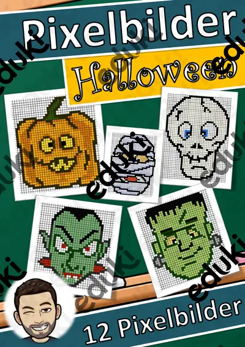
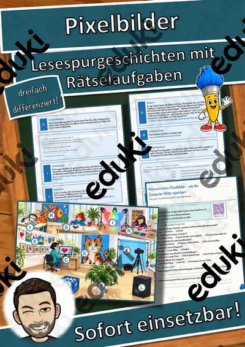
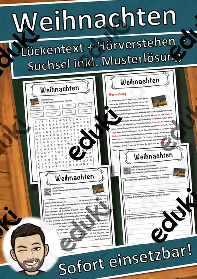

Pixelbilder Weihnachten (Kunst, Vertretung, Konzentrationsübung)
Mit diesen Pixelbildern zu Weihnachten stärken die Schüler ihre Konzentration. Durch das Übertragen der Raster auf ein Karopapier (Block), bilden die Schüler das Bild nach. Anschließend kann es ausgeschnitten und Laminiert werden. Mit einem kleinen Magneten lässt sich daraus auch noch ein schöner Kühlschrankmanget herstellen. #edukichristmas
FachKunst
KlasseKl. 3–6
SchulformGrundschule
MaterialartUnterrichtsreihen, Arbeitsblätter, Stationenlernen, Spiele
Ähnliche Materialien

Pixelbilder Halloween (Kunst, Vertretung, Konzentrationsübung)

Pixelbilder Super Mario (Kunst, Vertretung, Konzentrationsübung)

Weihnachten – Hörverstehen mit Lückentext (interaktiv)

Lesespur: Pixelbilder: wie der Computer Bilder speichert – Lesespurgeschichte mit Rätseln (Klasse 3)

Weihnachten Lückentext mit Wortspeicher Hörverstehen und Suchsel

Kalenderpuzzle - 365 Rätsel - Tafelmaterial - Konzentrationsübung - Datum für Tafel

Schokoladen-Banderole Weihnachten: Druckvorlage für die Schokoladentafel mit 4 Motiven (Klasse 1–4)